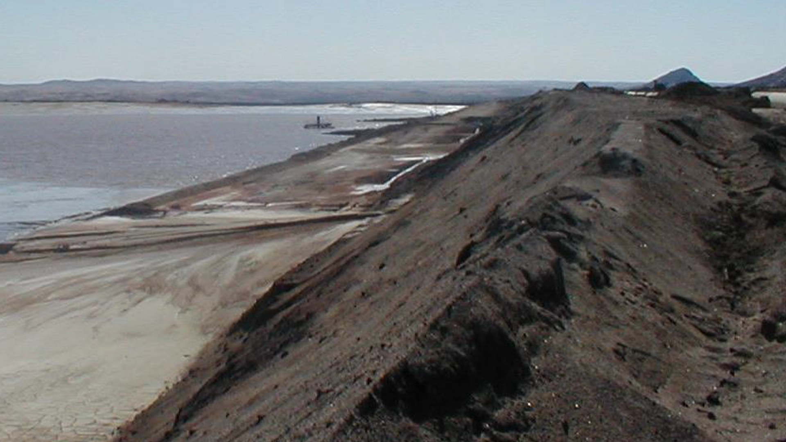

Case StudyПример проекта

The project required heavy-duty vertical spindle slurry pumps for pontoon installation, capable of handling corrosive slurry with a pH below 4, and ambient temperatures of up to 43 °C in Namibia's desert climate.
Проект требовал тяжёлых вертикальных шпиндельных шламовых насосов для установки на понтонах, способных работать с коррозионным шламом с pH ниже 4 при температуре окружающей среды до 43 °C в условиях пустынного климата Намибии.